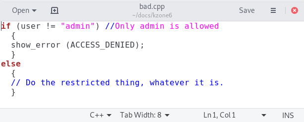
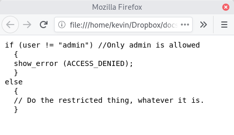
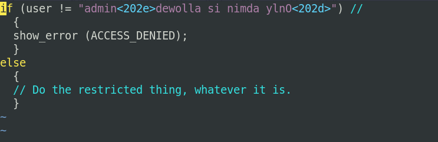

How Unicode reading direction characters defeat source code inspection, and what it means for the open-source movement
 This article is about how Unicode reading direction characters
(also known as bidirectional or "bidi" overrides) can
be used to disguise a security weakness deliberately placed into
computer source code. There are a number of reasons why such a
weakness might be introduced -- the obvious one is to provide the
developer with an unauthorised "back door" into sensitive or
restricted operations of
the software. This issue has been widely reported recently; some
authors are even claiming that it marks the end of the road for the
open-source software movement. I will try to explain, with an
actual program sample, how the weakness can be exploited, and then
discuss what the real-world implications are.
This article is about how Unicode reading direction characters
(also known as bidirectional or "bidi" overrides) can
be used to disguise a security weakness deliberately placed into
computer source code. There are a number of reasons why such a
weakness might be introduced -- the obvious one is to provide the
developer with an unauthorised "back door" into sensitive or
restricted operations of
the software. This issue has been widely reported recently; some
authors are even claiming that it marks the end of the road for the
open-source software movement. I will try to explain, with an
actual program sample, how the weakness can be exploited, and then
discuss what the real-world implications are.
The problem
Consider this piece of C++ program code, displayed in a graphical code editor.

On the face of it, it appears to be testing whether the user is called "admin", and preventing access to some function if that is not the case. There's little here, I think, to raise a red flag for anybody looking at the code.
Here is the same piece of code, seen in the Firefox web browser (Google Chrome displays it the same way).

This is how you might see this snippet of code, if you're inspecting it using some online source management system. Again, there's little here to raise a concern.
And here's how it looks in vim, where the
deception is clearly revealed.

What originally looked like a perfectly reasonable test to restrict access to a specific user, is revealed to allow access to almost anybody at all. This is a classic "back door".
The way this subterfuge works (with most modern editors) is to include Unicode reading direction characters in the text. Unicode code point 0x202E is an indication that the following characters are to be displayed right-to-left. The following 0x202D reverts back to left-to-right display. Of course, these code points have to be encoded properly as multi-byte characters in the text, but that isn't particularly difficult -- most modern editors can handle multiple encoding formats, and will allow arbitrary Unicode code points to be inserted.
The text of the comment "//Only admin is allowed" is actually
embedded (backwards) in the string that is being tested for equality with
admin. It is the reading direction characters that
make this substring appear to be a comment, which it isn't -- it's
part of the program logic.
There are many perfectly legitimate reasons to switch reading direction in text -- I might, for example, want to include a sample of Hebrew or Arabic text in my English. In this case, however, the willingness of the code editor (or web browser) to respect reading direction characters allows the true operation of the program to be concealed.
To make things worse, modern editors will allow blocks of text containing reading direction characters to be cut-and-pasted from one document to another, or from a web browser to an editor. So harmless-looking, dangerous code snippets can be propagated from one project to another, with the programmer being completely unaware.
Scope
This isn't the first time I've written about how the flexibility and complexity of Unicode can cause problems for programmers. I've remarked on overlong characters and combining characters, for example, both of which create the potential for code to behave in ways that are not obvious on inspection. The use of reading direction characters, however, provides for greater scope of abuse.
These characters don't give programmers complete freedom to make a program look, and behave, in different ways. The text still has to be valid program code, that will actually compile and run. At the same time, the malicious code has to be adequately concealed, in a way that will defeat most common code editors and viewers. Most programming languages allow any Unicode character to be used in text strings and comments. Some allow them in identifiers as well. Probably, the more willing the programming language is to accept non-printing Unicode characters, the more readily it may be exploited. I chose an example in C++, but the same technique would have worked in C and Java. I'm told that it works in Rust, although I haven't tried it myself.
The example I used to demonstrate the problem is not a particularly imaginative one. I suspect that more creative developers could find alarming ways to conceal back doors in their code using techniques like this.
Implications
What I'm describing here is not a "crack" or an "exploit". There is no way the technique could be used to create or exploit a security vulnerability in any running program. Rather, it's a way for malicious code to be deliberately inserted by a programmer, in a way that is hard for others to spot.
The implications for the open-source movement are particular striking. While I doubt that this is "the end of the road", I can see why there is a measure of unease. Most open-source programs and libraries are developed collaboratively, with contributions from many different individuals and businesses. A complex piece of software might have hundreds of contributors, none of whom are really accountable to one another. There might, perhaps, be somebody who is notionally "in charge", but that person might not have detailed oversight of every contribution. There is undoubtedly the potential for an errant developer to sneak something nasty into the codebase; that this nastiness can be disguised using Unicode trickery just makes it easier to do so.
But here's the reason why this isn't the end of the road: open-source software is already subject to significant problems of governance. There's nothing new here -- really there isn't. The open-source movement has created a revolution in the software industry, but nobody who works in that industry truly believes that open-source software is a benefit without a cost. The fact that contributions can be made by many different people, not all of whom are completely trustworthy, has always been an elephant in the sitting room.
In my professional life I work almost entirely on open-source software. I frequently find myself looking for bugs in code that I did not write. Sometimes I can't even identify the author. Much of this code is exceptionally complex, and it's usually undocumented. Judging the quality and security of code from an unknown source is already extremely difficult; the fact that bad code can be deliberately concealed only contributes incrementally, not substantially, to that problem. In my experience, security vulnerabilities in open-source code are overwhelmingly more likely to be caused by carelessness -- including my own -- than by malice. It takes significant effort to conceal a defect by fiddling with Unicode characters; it's unlikely to happen because of simple incompetence.
Whenever you use software you did not write entirely yourself from scratch, in assembly language, you're exposing yourself to the risk of malicious code. Supporting your development work with open-source code has the disadvantage that the good intentions of the contributing authors cannot be assumed. The notional advantage is that you, and anybody else, can inspect the code for deliberate nasties. The techniques described in this article reduce this advantage but, frankly, it never was much of an advantage to begin with.
Mitigation
There's a simple solution to this problem, and to others related
to Unicode: inspect code using a console rather than a smart
editor. Or, if you use IDE tools, configure them to show non-printing
Unicode characters explicitly (as vim does). Never
trust code that you've only inspected in a Web browser, since you
can't control how it handles Unicode. Don't look at code using
Windows Notepad, or Microsoft Word, both of which can be fooled
in the same way that my Linux editor was (I checked).
In particular, never cut and paste code from a browser into an editor.
These simple measures will not solve any of the existing problems related to open-source governance, but they will largely prevent Unicode trickery being used to introduce new ones.